3.4 Segédablakok, eszköztárak
A progrm kezeléséhez, használatához szüksékes kezelõ
elemek könnû elérését teszik lehetõvé a segédablakok, eszköztárak.
3.4.1. Térlépkezelõ eszköztár
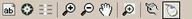
Az eszköztár tartalmazza a legfontosabb eszközöket,
melyek a navigációhoz és a térkép kezeléséhez szükségesek. Az eszköztár csak
a térképi oldalon jelenik meg közvetlenül a térkép felett.
3.4.1.1. 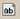
Névkeresés
A képernyõn látható térkép objektumainak nevei között
kereshet. A funkció részletes leírását olvashatja az "Eszközök/Névkeresés"
fejezetben.
3.4.1.2.
Navigátor
Az ikon segítségével navigáció kezdeményezhetõ. A
funkció részletes leírását olvashatja az "Fõmenü/Navigátor"
fejezetben.
3.4.1.3.
Tervezõ
Az ikon segítségével a tervezõ oldalra jut, ahol útvonalterveket
készíthet. A funkció részletes leírását olvashatja az "Fõmenü/Tervezõ"
fejezetben.
3.4.1.4.
Nagyítás
Az ikon a képernyõn látható térkép nagyítására szolgál.
A funkció részletes leírását olvashatja az "Eszközök/Nagyítás"
fejezetben. A funkcióa
"PDA navigáló gombjának"
felfelé nyomásával is elindítható.
3.4.1.5. 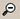
Kicsinyítés
Az ikon a képernyõn látható térkép kicsinyítésére
szolgál. A funkció részletes leírását olvashatja az "Eszközök/Kicsinyítés"
fejezetben. A funkcióa
"PDA navigáló gombjának"
lefelé nyomásával is elindítható.
3.4.1.6. 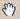
Mozgatás
Az ikon a képernyõn látható térkép mozgatására
szolgál. A funkció részletes leírását olvashatja az "Eszközök/Mozgatás"
fejezetben.
3.4.1.7. 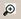
Kijelölõ nagyítás
Az ikon a képernyõn látható térkép kijelölõ nagyítására
szolgál. A funkció részletes leírását olvashatja az "Eszközök/Kijelölõ
nagyítás" fejezetben.
3.4.1.8.
Névceruza
Az ikon a képernyõn látható térkép objektumneveinek
lekérdezéseire szolgál. A funkció részletes leírását olvashatja az "Eszközök/Névceruza"
fejezetben.
3.4.1.9. 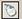
Helyzetérzékeny menü
Az ikon segítségével a Saját POI-k kezelése, és az útajánlóba
valamint a tervezõbe térképi pont bevitele végezhetõ el.
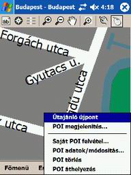
A "Helyzetérzékeny menü"
ikon kiválasztása után kattintson a térkép azon pontjára, amely pontjával
továbbiakban foglalkozni kíván. Az ekkor megjelenõ ablakban több lehetõség
közül választhat.
- Az "Útajánló újpont" sorra
kattintva a program az elõzõleg kijelölt pontot beemeli a "Tervezõ"
-be
- A "POI megjelenítés"
sorra kattintva a program az elõzõleg kijelölt pont környezetében lévõ, programba
beépített "POI"
(jelenleg a benzinkutak) adatbázis cimei között válogat.
- A "Saját POI felvéte" sorra
kattintva a program az elõzõleg kijelölt ponthoz egy újonnan megjelenõ ablakban,
bekéri a felveendõ "Saját POI" adatait. A "Médium"
felhasználók ezen lehetõsséggel nem élhetnek ezért a sor szürkén jelenik meg.
Ammenyiben "Navigáció",
vagy "Nyomkövetés" közben indítja el a funkciót
a "Navigáció menü/Térkép"
gommbal, úgy a program rákérdez, hogy a GPS koordinátát használja e. Ha a
"YES" gombot kéri úgy az adott GPS pozíciója lesz
a POI helye. A "NO" gombot választva a POI helye
az lessz ahová kattintott a képernyõn.
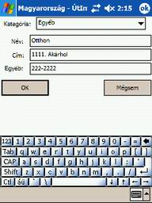
A "Kategória" ablakra kattintva
38 különféle alkategóriába helyezheti el a felvett pontját.
A "Név" ablakba, a
felvett pontjának nevét írhatja be. Továbbiakban a Saját POI adatbázisban
ezen a néven keresheti meg a felvett pontját.
A "Cím" ablakba, a
felvett pontjának címét írhatja be.
Az "Egyébb" ablakba, a
felvett pontjának további azonosítóit (pl. telefonszámát) írhatja be.
Az "OK" gombra kattintva
a program elmenti a felvett pontot, és a hozzáfûzött információkat.
A "Mégsem" gombra kattintva
a program visszalép az elõzõ ablakhoz, annélkül hogy elmentette volna a POI-t
- A "POI adatok/módosítás"
sorra kattintva az elõzõleg a térképre helyezet
Saját POI-ra kattintva, megjelennek a kijelölt POI adatai, amelyeket tetszés
szerint módosíthat.
- A "POI törlés" sorra kattintva
az elõzõleg a térképre helyezet Saját
POI-ra kattintva, a kijelölt POI törlõdik az adatbázisból.
- A "POI áthelyezés"
sorra kattintva, egy elõzõleg a térképre
helyezet Saját POI helytete, fog megváltozni arra a pozícióra ahol a "Helyzetérzékeny
menü" -t kérte.
3.4.2. Navigációs adatok
A "Navigációs ablak"
-ban a navigálást megkönnyítõ információk jelennek meg.
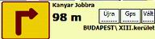
A megjelenõ ablak
bal oldalán lévõ kis ábrán láthatja a következõ navigációs manõvert. Az ábra
mellett lévõ vastag szám és mértékegység (m, km), jelzi a manõverig megteendõ
távolságát. Felette a navigációs manõver szöveges kiírása helyezkedik
el.
A
"Vált" gombot akkor kell használni, amikor több
pontos utiterve volt és az elsõ szakaszon nem használta a "Navigátor"funkciót.
Ez esetben a program az elsõ (indulási) ponthoz próbálja tervez utat. Ilyen
esetben válassza ki a 2., esetleg további szakaszt aszerint, hogy hol tart
az útvonalon.
Az „Újra”
gombot megnyomva az útvonalát terveztetheti újra, abban az esetben, ha eltért
a megadott útvonaltól, és nem automatikus újratervezést használ.
A „GPS” gombot
megnyomva a "Navigációs adatok" ablak helyet a
"GPS adatok"
ablak jelenik meg.
A gombok alatti sorban azon objektum nevének kiírása jelenik
meg ami fölött a GPS jel pozíciója van (aktuális tartózkodási helye).
3.4.3. GPS adatok
A "GPS
adatok" ablakban a GPS vevõ által szolgáltatott adatokat összesítve
láthatja. Az ablak közvetlenül a térkép
alatt látható, és csak akkor aktív ha a "Nyomkövetés"
vagy a "Navigátor"
funkció mûködik.
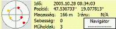
Az "Idõ" sorban a dátumot
és a középeurópai idõt láthatja.
A "Pozíció" sor elsõ tagja
az északi szélesség (47,...), a második tagja a keleti hosszúság (17,...)
koordinátáit jelenti.
A „Magasság” sorban a pillanatnyi
magasságát láthatja méterben.
A „Sebesség”
sorban a km/h-ban mért sebességet olvashatja.
A "Mûholdak”
sorban megjelenõ szám azt jelzi, hogy a GPS vevõje hány mûhold jelét tudja
biztonsággal venni. Ha ez a szám háromnál kevesebb, akkor a vevõ nem tud használható
koordinátát adni.
Az „Irány”
sorban az északi „0” foktól számított haladási irányát olvashatja
le fokban. A sebességi és irány adatokat csak az RMC nevû NMEA mondat tartalmazza.
A bal oldalon
lévõ koncentrikus körökben láthatjuk a fogható mûholdak térbeli elhelyezkedését,
és azok jelerõsségét is. Ebben az ablakban is megjelenik haladási irány (nagy
szürke nyíl), amennyiben GPS vevõ képes az RMC NMEA mondat vételére.
A
jel erõségét a mûholdak színe jelzi az alábbi színskála szerint.
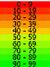
A sötétvörös szín a nem megfelelõ, az egyre sárgább
és zöldebb színek a használható mûholdakat jelzik.
A "Navigátor" gomb csak akkor
használható ha elõzõleg a "Navigátor"
-t indította el. A gombot megnyomva a "GPS adatok"
ablak helyet a "Navigációs adatok"
ablak jelenik meg.
3.4.4. PDA navigáló gomb
"
Navigáló gomnak" a PDA készülék alján középen elhelyezkedõ gombot
vagy gombcsoportot hívjuk. A gomb lehet egyrészes, nagy, köralakú (ez a legelterjedtebb), vagy
akár több részbõl álló szögletes is. Azonban bármilyen formájú legyen a gomb,
öt irányba mindíg megnyomható (le, fel, jobbra, balra, középen). A program
ezekre a gombnyomásokra különféleképpen reagál.
-
"Felfelé" nyomva a gombot a program "Nagyítani"
fogja a térképet.
- "Lefelé" nyomva
a gombot a program
"Kicsinyíteni"
fogja a térképet.
- "Balra"
nyomva a gombot a program
"Navigátor"
vagy "Nyomkövetés"
közben Magyarország térképén fog haladni.
-
"Jobbra" nyomva a gombot a program
"Navigátor"
vagy "Nyomkövetés"
közben települések térképén fog haladni.
-
"Középen" megnyomva a gombot elindíthatja, vagy
leállíthatja a "Navigátor"
-t.